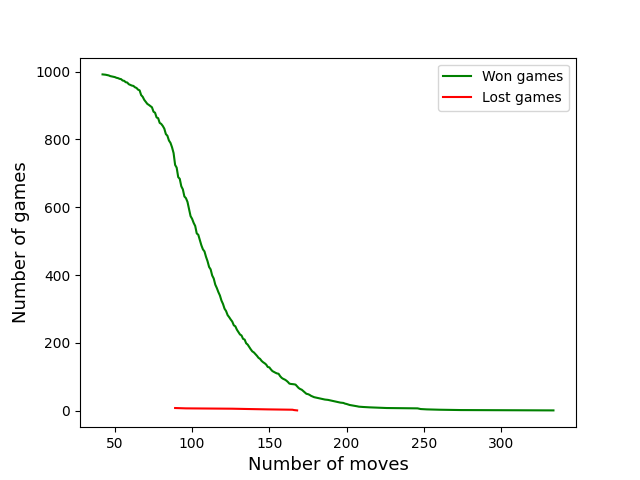
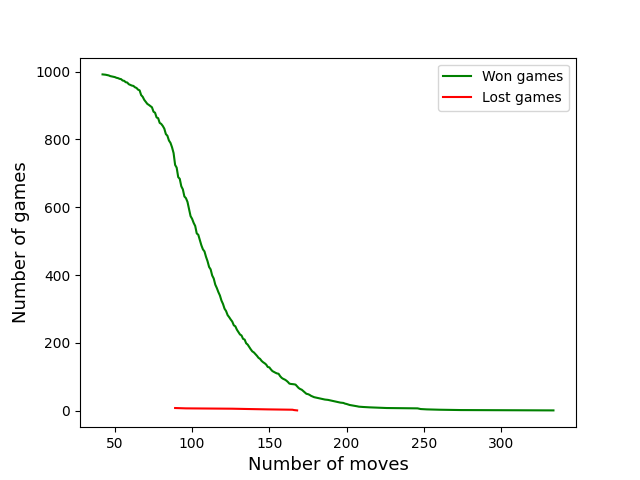

This table show the number of times Stockfish has won, drawn and lost, with white pieces, black pieces and in total.
| Win | Draw | Loss | |
|---|---|---|---|
| White | 698 | 601 | 2 |
| Black | 294 | 999 | 6 |
| Total | 992 | 1600 | 8 |
These two plots show some interesting statistics of the games played.
In the first plot, we see that if stockfish is Black, it uses more turns than if white.
But sometimes these games take much longer time.
In the secound plot we see that
 
In the table below Mean number of moves and the standard deviation of the three plots is shown
| Mean moves | STD | |
|---|---|---|
| All games | 1459.19 | 1339.11 |
| Stockfish White | 669.91 | 346.05 |
| Stockfish Black | 880.19 | 535.68 |
| Won games | 669.91 | 346.05 |
| Lost games | 137.0 | 1.62 |